This page will walk you through how to install and setup Prism Launcher for use with the modpack. This is the recommended way to install mods, and helps quickly switch between various installations without needing to edit your .minecraft directory. We will not be providing any help in this wiki towards other installation methods, but you may use other methods if you choose.
Warning
The Survival world is currently NOT modded. This page is to be updated and used next time we play modded. The current Survival world is Vanilla minecraft!
Step 1 - Installing Java 17
If you have played with mods in 1.18 or above you can skip this step.
Install Java 17 from here, making sure you select the “JDK 17” tab https://www.oracle.com/uk/java/technologies/downloads/#jdk19-windows
Scroll down and select the appropriate installer. Make sure you have selected JDK 17 and download any option that says “installer”
Step 2 - Installing Prism Launcher
Download the Prism Launcher Installer from this page
.exe Installation
Simply run the installer, making sure you select “launch Prism Launcher” at the end, then follow the instructions, ensuring you select Java 17 when Prism Launcher asks.
.zip Installation
Extract the .zip into a folder you will remember, preferably a Games folder if you have one
Open the extracted folder and run prismlauncher.exe and follow the instructions, ensuring you select Java 17 when Prism Launcher asks.
You may want to create a shortcut for this so it is easier to access. Simple right click on prismlauncher.exe and create a shortcut, you can then move this shortcut wherever you like.
After installing the Prism Launcher you should get something that looks like this:
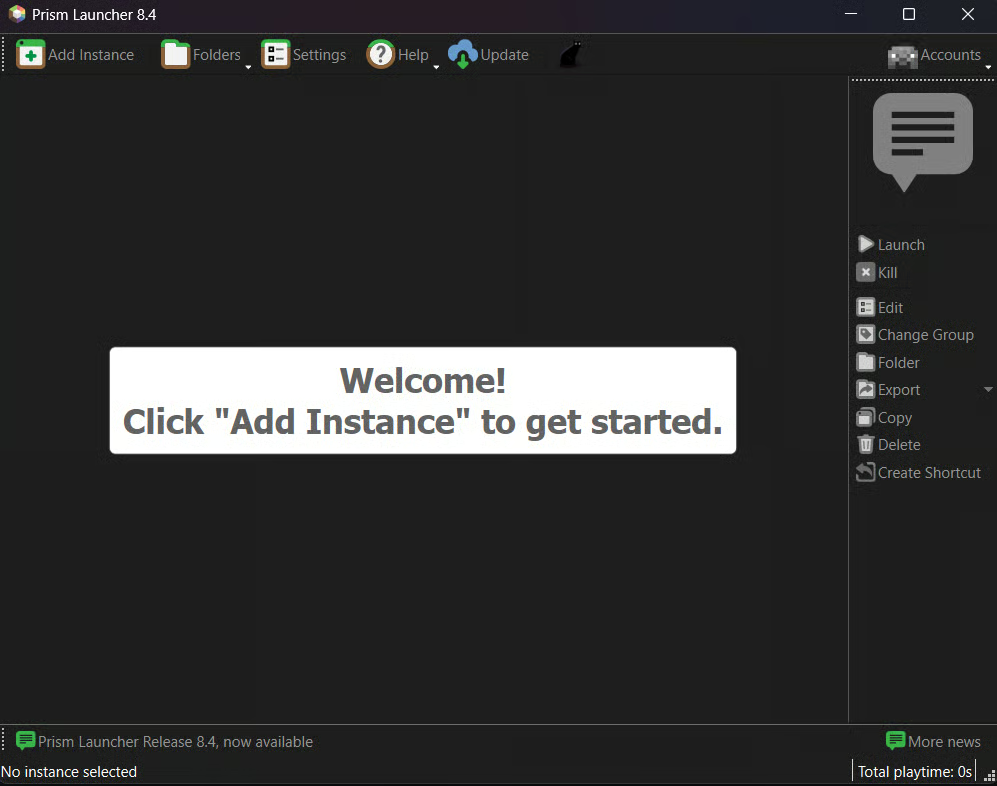
Step 3 - Logging Into your Minecraft Account
In the top right of the launcher, there will be a greyed out “Accounts” button. Clicking this button will open a dropdown menu, in this menu select “Manage Accounts”
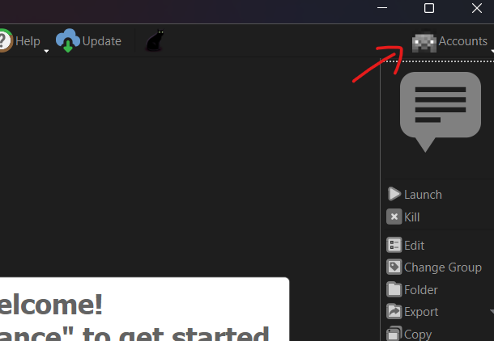 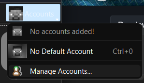
Once in this menu, select “Add Microsoft” in the top right. This will open a microsoft login page, and may autofill the code it is requesting. If not, go back to Prism Launcher and copy the code from the pop up. You will then be prompted to login to your microsoft account as normal.
Your Prism Launcher should now look like this:
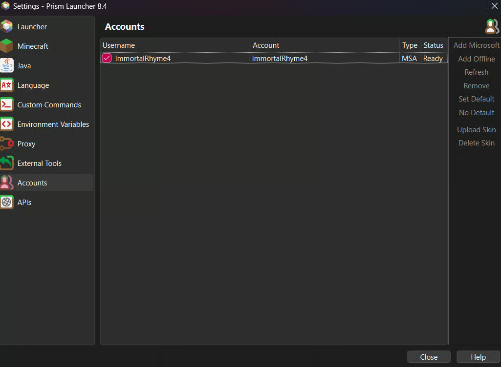
You should now close this accounts menu pop up.
Step 4 - Creating an Instance
Creating an instance for the modpack is quite simple, just press the “Add Instance” button in the top left, this will open a popup menu as follows.
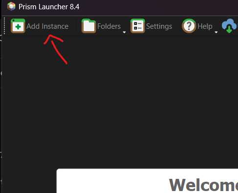 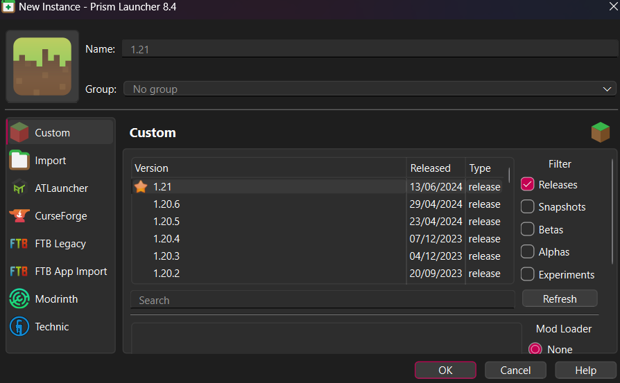
Keep this popup open, but you can safely ignore everything right now.
Prism Launcher has a neat feature that means when you install a modpack, it will auto setup all your installation settings for you, so you don’t need to worry about selecting the correct game version or fabric version!
There are two methods you can use to install the modpack.
Method 1 - Curseforge Integration
Clicking on the curseforge button in the popup will open a menu as follows:
Simply search for “Create Astral” and scroll until you find it. Once you locate it, click on it and ensure the version selected in the bottom right is “v2.1.4c”, if so, hit the “ok” button and the modpack will begin installing!
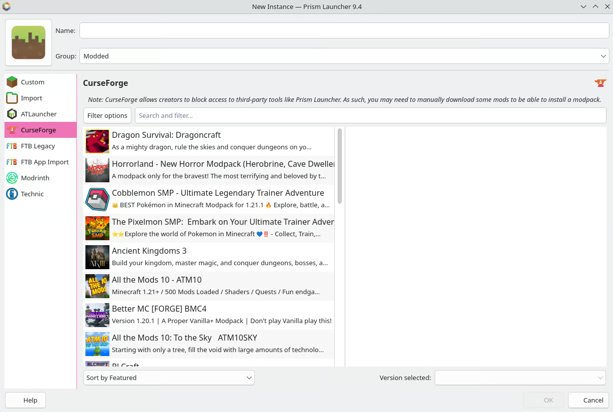 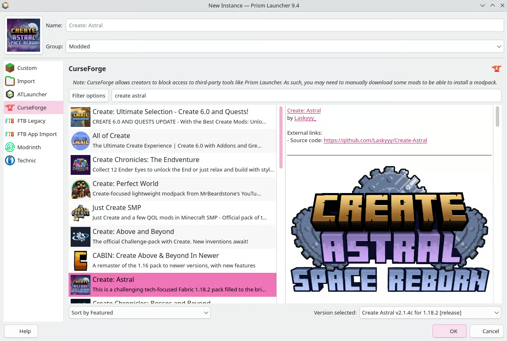
And now wait for you pack to finish installing! If it is interrupted by another popup, see “Blocked Mods Found” before continuing.
Method 2 - Manual Installation from Curseforge
Alternatively, you can install the modpack from the .zip file downloaded from the curseforge page itself. Ensure the version you are downloading is “v2.1.4c”.
Now you have the .zip downloaded, head back to prism launcher and select “Import”, then hit “Browse” and locate the .zip and select the .zip you just downloaded. Now hit “OK” and the pack will begin installing!
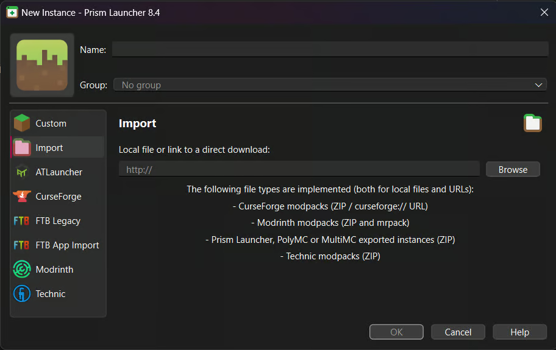
And now wait for you pack to finish installing! If it is interrupted by another popup, see “Blocked Mods Found” before continuing.
”Blocked Mods Found”
During the installation you may receive a message titled “Blocked mods found” with a scroll box with a bunch of links with hashes and crosses below them. Don’t worry! This just means the mod developer has blocked third party installers for their mod.
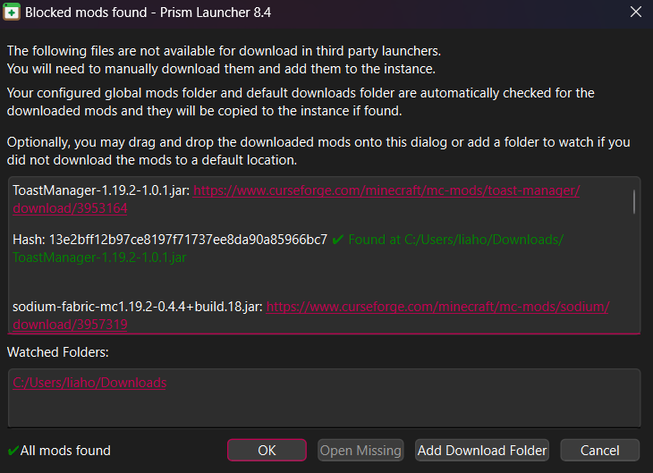
Simply scroll down this list and click on every link, the crosses will begin turning into check marks. Once all the crosses are check marks, A little “All mods found” message will appear in the bottom left. Now, hit ok and the modpack will continue installing.
Step 5 - Tweaking Installation Settings
Now we have our installation set up, you might want to tweak some settings such as RAM allocation. To do this, click on the installation and select “Edit” on the right. This will open a popup, in this popup head to “Settings”
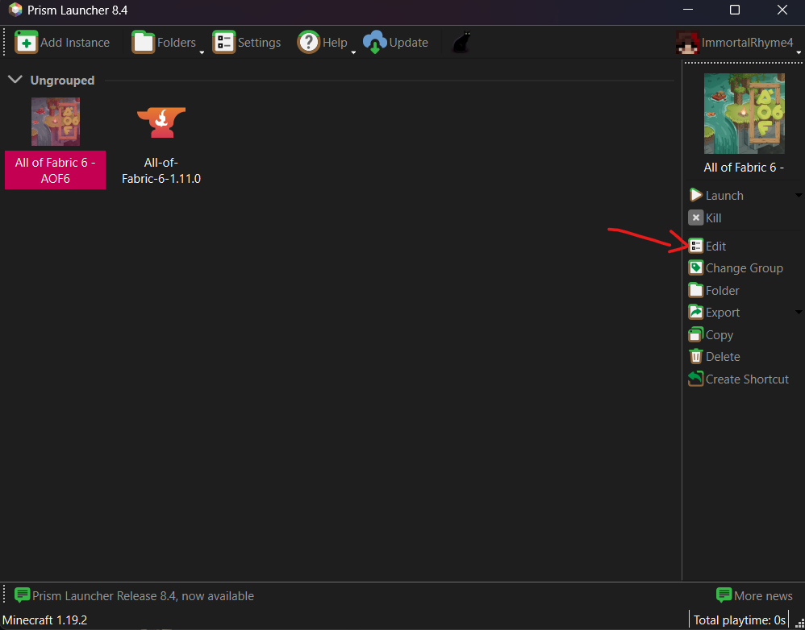 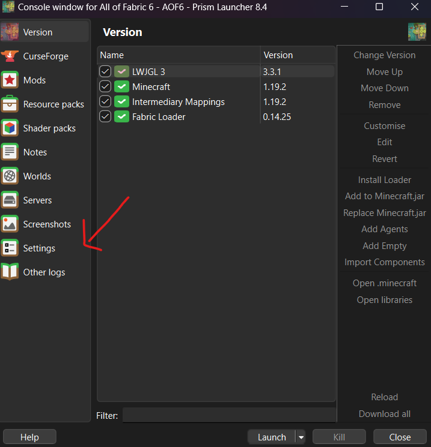
Once in settings, select the “Memory” check box and increase the “Maximum” value to the amount of RAM you want to allocate. You will need a minimum of 4gb.
This is also the menu where you can edit many other things to your liking such as game window size on launch. But this is not necessary.
Step 6 - Launch the Game
And you’re done! You can now launch the game!
Simply select the modpack and hit launch. It may take a while to load depending on your hardware. On my laptop it took 70 seconds for the game window to appear, and then a further 90 seconds for the main menu to load, so just be patient.
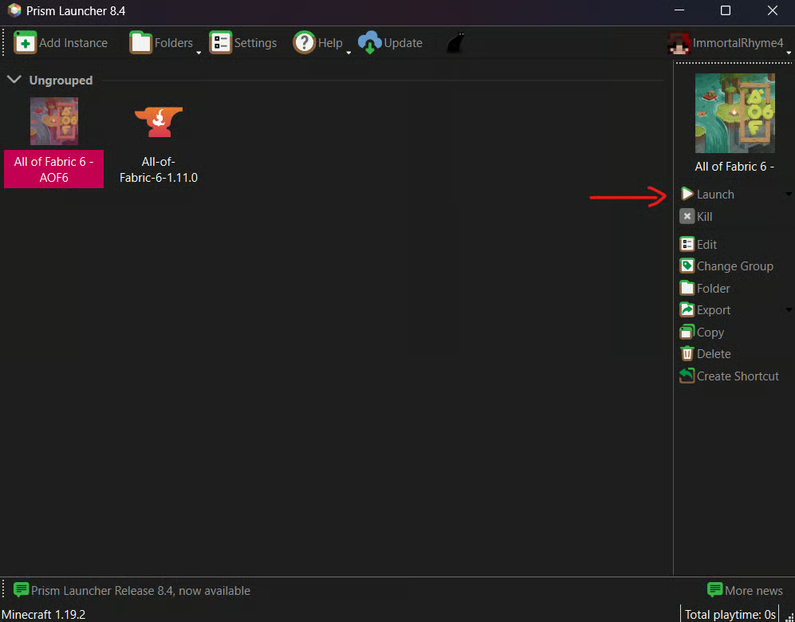
Once you are in the main menu, don’t forget to complete this checklist:
- Video Settings - Make sure your graphic settings are set to what your PC can handle
- Audio Settings - Make sure you change the values to your liking
- Key Binds - The key binds will be at their defaults, so make sure to change them to your liking
- FOV Slider
- Language
- Resource Packs - while we don’t recommend installing any yourself, this modpack comes with some such as legacy create copper
- Shaders - again, we do not recommend installing any yourself, but this modpack comes with three shader packs pre-installed.